„
“

The Dark Angels, known in High Gothic as Angelis Tenebraium, have the honour of being the first Space Marine Legion created by The Emperor of Mankind. Their origins are however shrouded in mystery and secrecy, though it is said their Gene-Seed was in production a century before the end of the Unification Wars.
During their earliest days Prototype Space Marines such as Abraxus Ghent were created from the Gene-Seed of Lion El'Jonson and served as the template for later Astartes to come. Known as the Primordial Strain, almost none of these initial prototypes are known to not have survived the process of becoming Space Marines but they nonetheless formed the basis of the initial culture of the First Legion. The subjects of these early experiments were recruited from genetically pure and uncorrupted inhabitants of Terra, themselves hard to find amid the many Atomic wars and genetic plagues. The Emperor mainly acquired such subjects through captured foes and purchasing slaves from nomadic clans. As a result the earliest Dark Angels were diverse culturally and recruited from across Terra, in contrast with most of the other Legions during their earliest days. The First Legion became the crucible in which all the cultures of Old Night combined with the Emperor's genetic prowess to create a new and formidable strain of warrior.
In the earliest days of the Great Crusade the First pushed out of the Sol System, cleansing the Oort Cloud and keeping watch along the Heliopause border for terrors that sought to slip into the Emperor's new realm. They also liberated the outermost edges of the Sol System, recovering whatever few Human survivors could be found. By this point the Legion had become isolated and developed a complex culture of ciphers and rituals alongside the creation of the first specialized Orders. Upon their return from the outer Sol System their grey armor had been changed to pitch black. Upon their return they mustered at Saturn, where the Emperor gifted them a fleet of ancient but highly advanced warships. In the ensuing Great Crusade across the greater Galaxy the First Legion continued their role as exterminators, using forbidden Archaeotech such as Gene-Phages and Rad-Waves to annihilate enemies deemed too terrible to face in open battle. As other Legions and Expeditionary Fleet oversaw the colonization and compliance of countless worlds The First fought nightmarish creatures and Xenos without hesitation or complaint. Many of their campaigns, such as those as Behtelgen IV, have been deemed classified and thus to many the early career of the First Legion seems lacking.
These trials would face the Legion into a fearsome weapon and its Legion Master stood as the Left Hand of the Emperor. This role continued even as early Primarchs such as Leman Russ were rediscovered, with the Legion Master being 3rd in the Imperial Court after Malcador and Horus. However amid the countless battles the Hosts of the Hexagrammaton, once an ever-shifting body of knowledge that changed to meet each challenge, had become stagnant. The warriors of the First assumed they had reached the apex of skill and could learn no more. Recruitment from outside their enclaves on Terra was minimal and each battle led them further down the path of arrogance. Tradition and ritual became more valued than innovation, and each Order and Host jealously guarded their small fragments of lore. The Legion began to turn in upon itself as other Legions such as the Luna Wolves, Ultramarines, and Imperial Fists had grown in prestige and number of triumphs. The final blow for the Legion's fragile pride came at Canis-Balor where the First was overcome by an unknown Xenos breed and Exterminatus was enacted at the cost of Grandmaster Thrane's life.
In the aftermath of the Canis-Balor debacle turmoil swept the Legion as the various Orders and Hosts struggled for primacy. To settle this problem the First Legion held a great Council at Gramarye that saw bitter vitriol and admonition. The Council was unable to choose a new Grandmaster, forcing Malcador to intervene and choose Urian Vendraig. Vendraig's new task was to unify and rejuvenate the Legion and in an unprecedented move allowed Remembrancers to stay by his side and document the First Legion's ascension. Shortly therafter, the Imperium encountered the vicious Rangda. In their initial campaigns against the Rangad at Advex-Mors the First Legion lost 5,000 Astartes over four months. In the initial Rangdan Xenocides the divisions of the Legion were only exacerbated. At Karkasarn the First Legion attempted to regain its glory, only for Grandmaster Vendraig to meet his end after launching a hasty assault.
Vendraig's death stung the First Legion hard, as did Roboute Guilliman's scolding of them at the end of the battle. Command of the Legion fell to the Council of Masters who split it across the stars to seek vindication in conquest. They gave battle without remorse and without regard for their own life. The 9th and 14th Chapters took the coral citadels of Melnoch from the Fra'al in a single night at the cost of a tenth of their own, all to outpace the Luna Wolves elsewhere in the cluster. Upon Vorsingun a force of 1,000 Initiates and 4,000 war engines of the Host of Iron battled an Ork horde over three times its size. They prevailed, but again at a fearsome price. Yet for each victory the Legion could not regain its former reputation. By the mid Great Crusade they had become known as grim death-seekers as each Chapter, Host, and Order waged its own independent wars.
However, the fortune of the Legion changed dramatically when the First Legion's Primarch Lion El'Jonson was discovered on Caliban. Upon reunion with his Legion The Lion tested his sons mettle by dueling the captain of the company presented before him. Though not clad in Power Armour and facing a Terminator-clad captain, The Lion bested his foe and it is said both sides learned respect for the other. From that day forth The Lion renamed the Legion the Dark Angels. Announced by the Primarch, the connotation was in fact first drawn by his mentor Luther, who quoted a section from the legend upon first seeing Astartes descending using jump packs:
«And the angels of darkness descended upon pinions of fire and light...the great and terrible dark angels.»
Primarch
Lion's Seneschal
Hexagrammaton
Deathwing
Ravenwing
Dreadwing
Ironwing
Firewing
Stormwing
Orders of the Hekatonystika
The Five Hundred Companions
The Order of Caliban
Order of Annihilation
Order of Bloody Shrouds
Order of Broken Claws
Order of Broken Wings
Order of the Crimson Field
Order of the Empty Sky
Order of Extinction
Order of Santales
Order of Shattered Crowns
Order of the Argent Spire
Order of the Broken Spears
Order of the Shattered Mantle
Order of the Shattered Spectrey
Order of the Three Keys
Hosts of the First Legion
1st Host
3rd Host
Host of Blades
Host of Bone
Host of Crowns
Host of Death
Host of Fire
Host of Iron
Host of Pentacles
Host of Stone
Host of the Void
Host of Wind